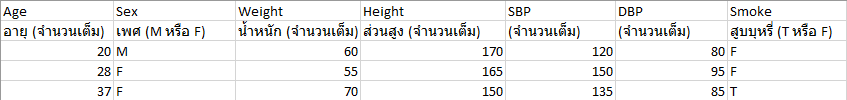

Hypertension Analysis
การวิเคราะห์ วินิจฉัยความเสี่ยงที่ก่อให้เกิด ความดันโลหิตสูง จากตารางข้อมูลของผู้ที่ได้รับการตรวจ
ขั้นตอนการทำงาน
- อัพโหลดไฟล์ประเภท .csv ที่มีข้อมูลในรูปแบบต่อไปนี้ 
- ระบบจะทำการแสดงผลจากข้อมูลที่อัพโหลดและแสดงระดับความเสี่ยงของแต่ละบุคคล
อัพโหลดไฟล์
ตารางแสดงผล
| อายุ | เพศ | น้ำหนัก | ส่วนสูง | SBP | DBP | สูบบุหรี่ | ผลลัพธ์ |
|---|